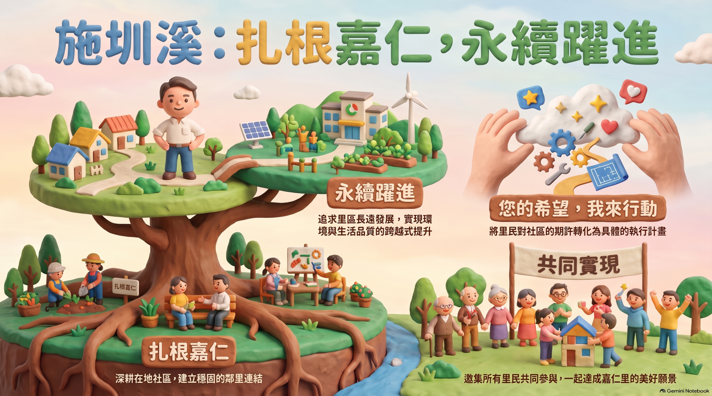

您的希望 ‧ 我來行動 ‧ 共同實現

點擊圖片放大檢視
| 治理維度 | 傳統服務模式 | 💡 施圳溪的 2026 模式 |
|---|---|---|
| 服務態度 | 被動反應 等待通報才處理 |
主動規劃 數據導向，提前預防 |
| 溝通機制 | 單向布達 僅傳達上級政令 |
雙向共創 建立平台，匯聚民意 |
| 問題解決 | 傳統修補 頭痛醫頭，腳痛醫腳 |
永續治理 全盤檢視，治標且治本 |
全天候、零距離的民意匯聚
從藍圖到施工的精準執行力
看見改變，共享永續躍進